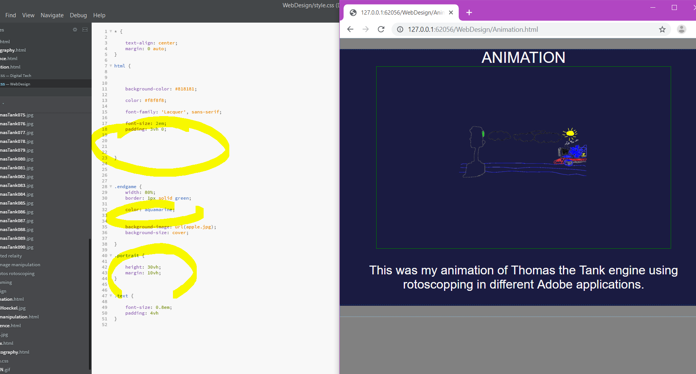
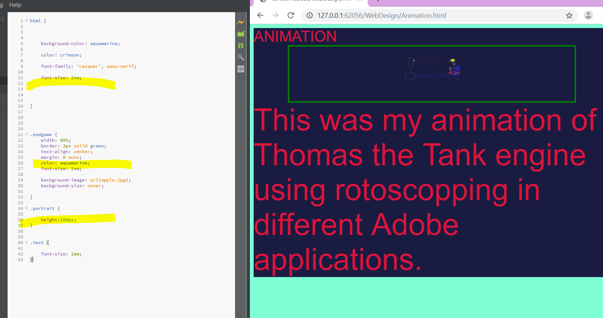

EVIDENCE


This is my evidence that I have used a css file to code and style my website to make it look more attarctive. As seen in one of these images it was extremely unpleseant to look at but once I coded it using css seen as highlighted text, the webpage looked much better. The css file can change font, colour and essentially everything to do with the web page. A css file is crucial in web design as it can make the website more appealing to the viewer and it makes it much easier to use.